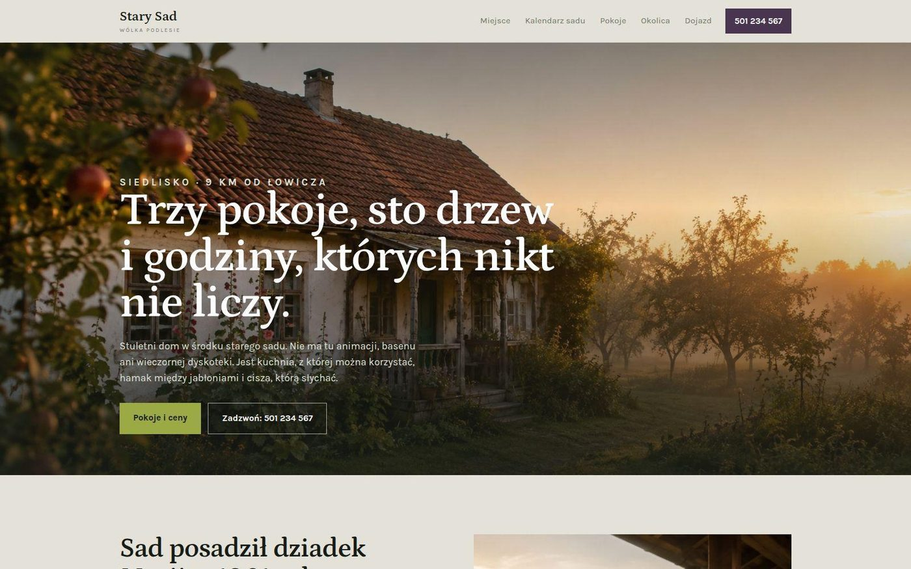

projekt pokazowy
Agroturystyka · Wólka Podlesie
Stary Sad
Problem: gość chce wiedzieć, co go czeka akurat w tym tygodniu, w którym przyjedzie. Sad wygląda inaczej w kwietniu, inaczej we wrześniu.
Rozwiązanie: kalendarz sadu — wybierasz miesiąc i czytasz, co wtedy kwitnie, dojrzewa albo pachnie. Do tego trzy podstrony, bo pokoje i dojazd wymagają miejsca, którego nie ma na jednej.
Otwórz projekt